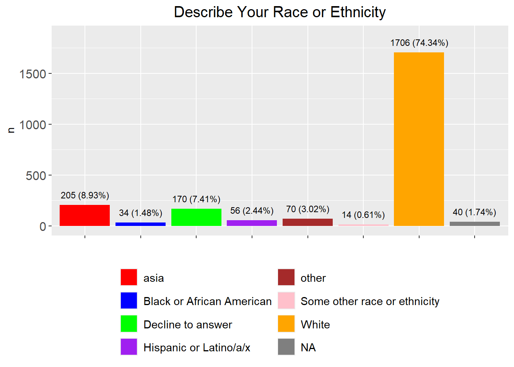
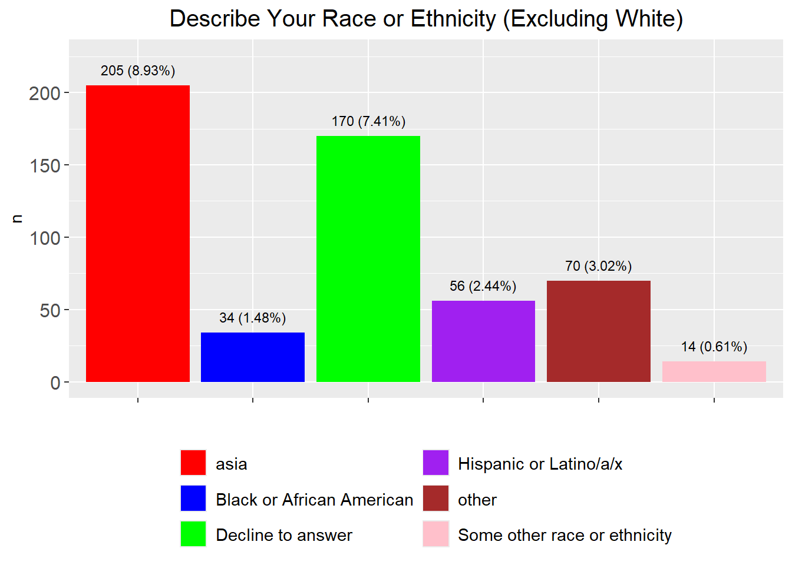
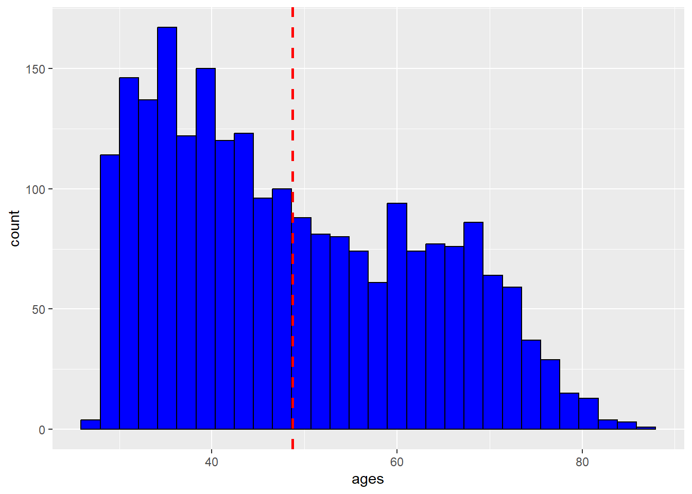
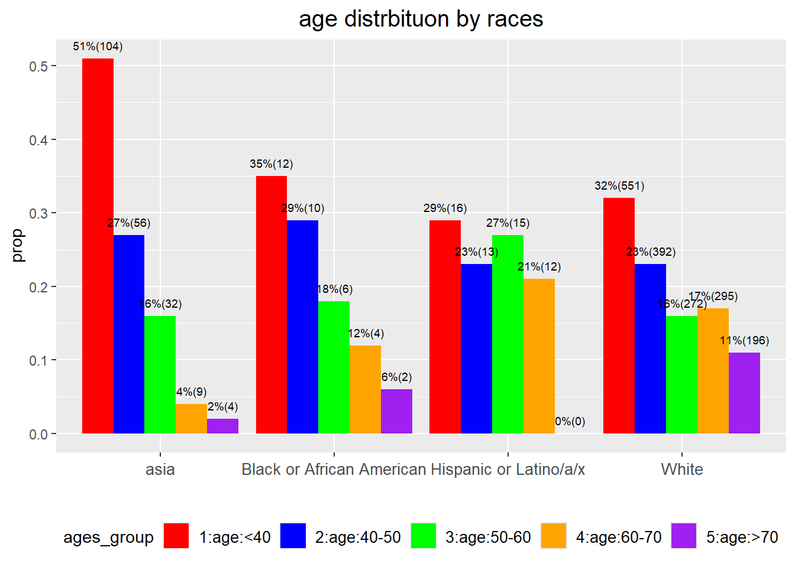
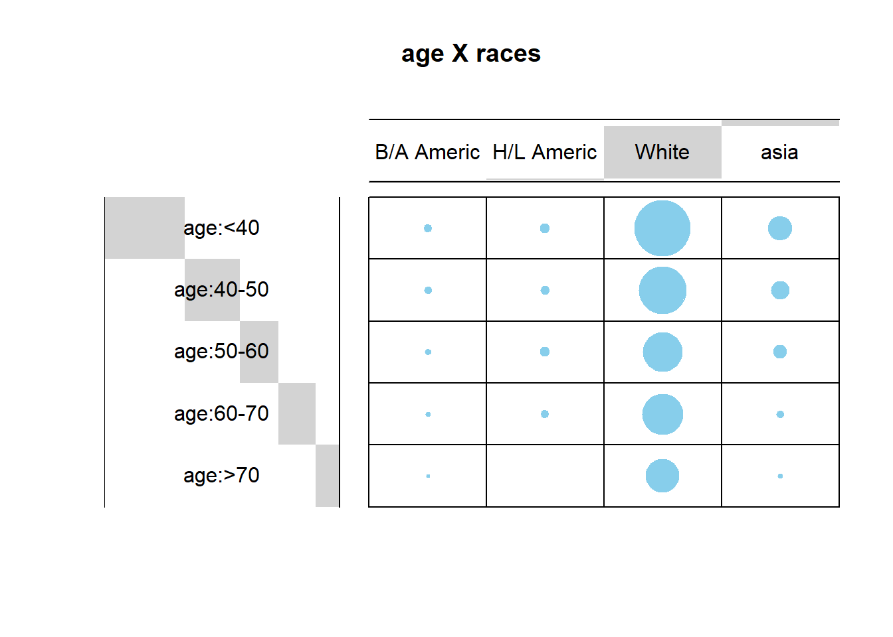
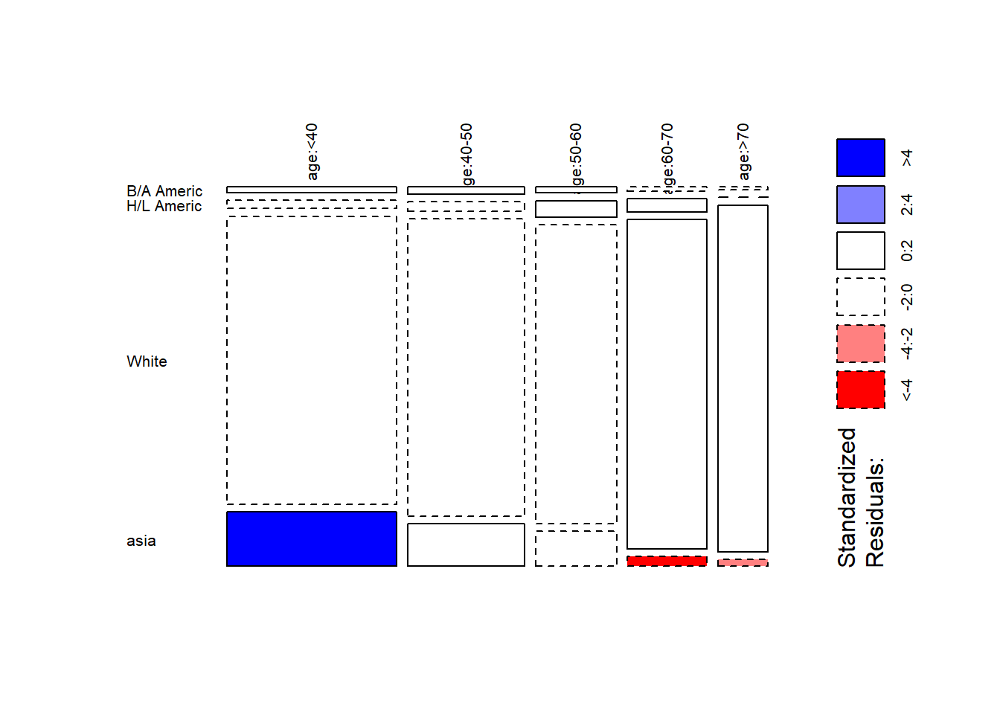
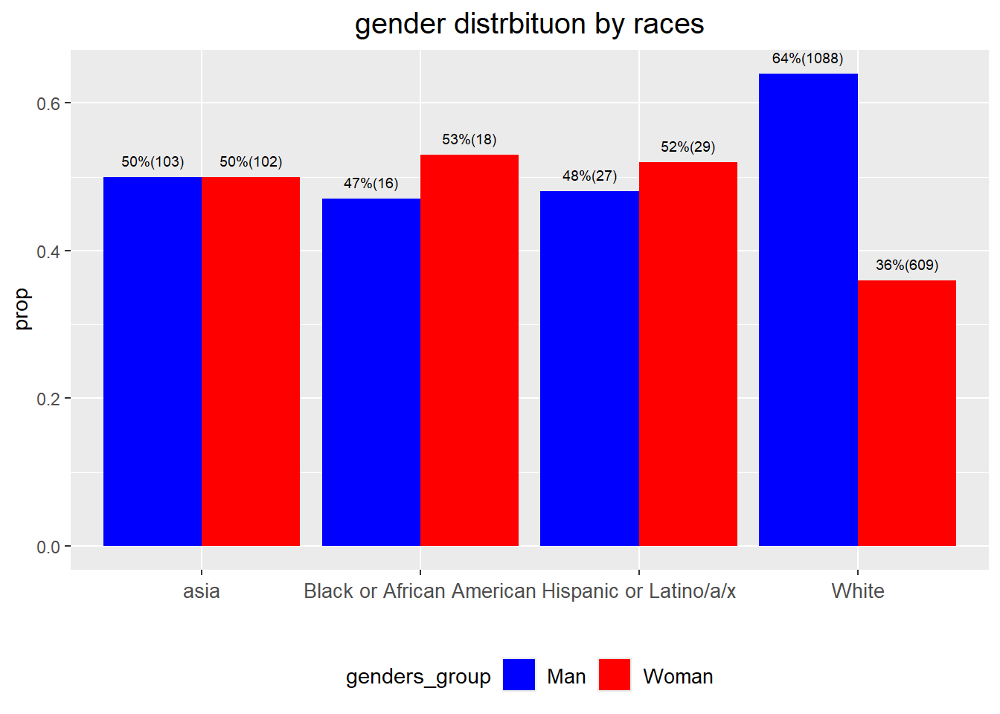
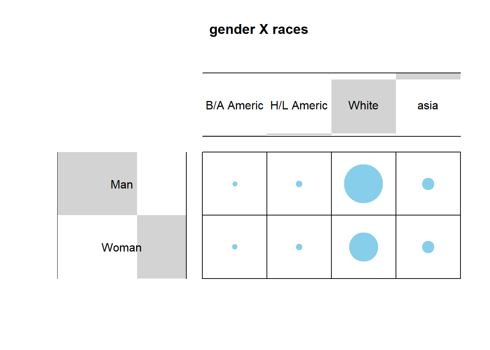
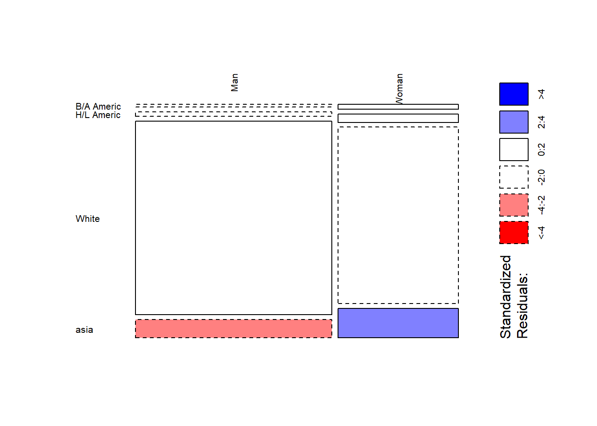

Last updated: 2025-04-24
Checks: 6 1
Knit directory: WI_Dental_Survey/
This reproducible R Markdown analysis was created with workflowr (version 1.7.1). The Checks tab describes the reproducibility checks that were applied when the results were created. The Past versions tab lists the development history.
The R Markdown file has unstaged changes. To know which version of
the R Markdown file created these results, you’ll want to first commit
it to the Git repo. If you’re still working on the analysis, you can
ignore this warning. When you’re finished, you can run
wflow_publish to commit the R Markdown file and build the
HTML.
Great job! The global environment was empty. Objects defined in the global environment can affect the analysis in your R Markdown file in unknown ways. For reproduciblity it’s best to always run the code in an empty environment.
The command set.seed(20250423) was run prior to running
the code in the R Markdown file. Setting a seed ensures that any results
that rely on randomness, e.g. subsampling or permutations, are
reproducible.
Great job! Recording the operating system, R version, and package versions is critical for reproducibility.
Nice! There were no cached chunks for this analysis, so you can be confident that you successfully produced the results during this run.
Great job! Using relative paths to the files within your workflowr project makes it easier to run your code on other machines.
Great! You are using Git for version control. Tracking code development and connecting the code version to the results is critical for reproducibility.
The results in this page were generated with repository version 05d3575. See the Past versions tab to see a history of the changes made to the R Markdown and HTML files.
Note that you need to be careful to ensure that all relevant files for
the analysis have been committed to Git prior to generating the results
(you can use wflow_publish or
wflow_git_commit). workflowr only checks the R Markdown
file, but you know if there are other scripts or data files that it
depends on. Below is the status of the Git repository when the results
were generated:
Ignored files:
Ignored: .Rhistory
Ignored: analysis/figure/
Unstaged changes:
Modified: analysis/2024_0701_survey_part3.Rmd
Modified: analysis/2024_0701_survry_part3_01_racevsothers.Rmd
Modified: analysis/index.Rmd
Note that any generated files, e.g. HTML, png, CSS, etc., are not included in this status report because it is ok for generated content to have uncommitted changes.
These are the previous versions of the repository in which changes were
made to the R Markdown
(analysis/2024_0701_survry_part3_01_racevsothers.Rmd) and
HTML (docs/2024_0701_survry_part3_01_racevsothers.html)
files. If you’ve configured a remote Git repository (see
?wflow_git_remote), click on the hyperlinks in the table
below to view the files as they were in that past version.
| File | Version | Author | Date | Message |
|---|---|---|---|---|
| Rmd | 05d3575 | han | 2025-04-23 | 4/23/2025 |
#dim(Dentist_Survey$`Dentist Survey`)
load("C:\\Shengtong\\Research\\AllCollaboration\\2024\\202407\\Dentist_in_WI.RData")
variables=colnames(Dentist_in_WI)
data.frame(questions=variables)%>%
datatable(extensions = 'Buttons',
caption = "",
options = list(dom = 'Blfrtip',
buttons = c('copy', 'csv', 'excel', 'pdf', 'print'),
lengthMenu = list(c(10,25,50,-1),
c(10,25,50,"All"))))dim(Dentist_in_WI)[1] 2295 40variables_of_interest=variables[-c(6,7,19:37)]
dentist_in_WI_of_interest=Dentist_in_WI[,-c(6,7,19:37)]
num_non_missing=apply(dentist_in_WI_of_interest,2, function(x) sum(is.na(x)==F) )
data.frame(variable=variables_of_interest, non_missing=num_non_missing)%>%
datatable(extensions = 'Buttons',
caption = " Interesting variables with non-missing numbers ",
options = list(dom = 'Blfrtip',
buttons = c('copy', 'csv', 'excel', 'pdf', 'print'),
lengthMenu = list(c(10,25,50,-1),
c(10,25,50,"All"))))race=dentist_in_WI_of_interest %>% dplyr::count(`Describe Your Race or Ethnicity`) %>% mutate(prop=round(n/nrow(dentist_in_WI_of_interest),4))
asia=c("East Asian", "Filipino", "Hmong", "Laotian", "South Asian") # define south east asia countries
asia_race= race %>% filter(`Describe Your Race or Ethnicity` %in% asia)
race_new=race %>% filter(`Describe Your Race or Ethnicity` %in% asia==F) %>% add_row(`Describe Your Race or Ethnicity`="asia", n=asia_race %>% select(n) %>% sum(), prop=asia_race %>% select(prop) %>% sum()) # combine south east asia countries into one unit
race_new2=race_new %>% filter(n>10) %>% add_row(`Describe Your Race or Ethnicity`="other", n=race_new %>% filter(n<=10) %>% select(n) %>% sum(), prop=race_new %>% filter(n<=10) %>% select(prop) %>% sum()) # aggregate categories with n<=10
fig=plot_function("Describe Your Race or Ethnicity", race_new2, legend_rows = 4, var_name="Describe Your Race or Ethnicity", custom_colors= c("asia" = "red", "Black or African American" = "blue", "Decline to answer" = "green", "Hispanic or Latino/a/x" = "purple", "other"="brown", "Some other race or ethnicity"="pink", "White"="orange", " "="black"))
fig
fig=plot_function("Describe Your Race or Ethnicity (Excluding White)", race_new2 %>% filter(`Describe Your Race or Ethnicity`!="White"), legend_rows = 3, var_name="Describe Your Race or Ethnicity", custom_colors= c("asia" = "red", "Black or African American" = "blue", "Decline to answer" = "green", "Hispanic or Latino/a/x" = "purple", "other"="brown", "Some other race or ethnicity"="pink", "White"="orange", " "="black"))
fig
race_new2%>% arrange(desc(n))%>%
datatable(extensions = 'Buttons',
caption = "",
options = list(dom = 'Blfrtip',
buttons = c('copy', 'csv', 'excel', 'pdf', 'print'),
lengthMenu = list(c(10,25,50,-1),
c(10,25,50,"All"))))stopifnot(sum(race_new2$n)==nrow(Dentist_in_WI))asia includes “East Asian”, “Filipino”, “Hmong”,
“Laotian”, “South Asian”
other aggregates categories with less than 10
responses.
date_of_birth=dentist_in_WI_of_interest$`Date of Birth`
year_of_birth=str_sub(date_of_birth, nchar(date_of_birth)-3, nchar(date_of_birth))
ages=2025-as.numeric(year_of_birth)
mean(ages)
ggplot(data.frame(ages=ages), aes(x=ages)) + geom_histogram(color="black", fill="blue")+
geom_vline(aes(xintercept=mean(ages)),
color="red", linetype="dashed", size=1)
races=race_new2$`Describe Your Race or Ethnicity`
dentist_in_WI_of_interest1=dentist_in_WI_of_interest %>% mutate(ages=ages)
asia=c("East Asian", "Filipino", "Hmong", "Laotian", "South Asian") # define south east asia countries
count_race=function(data)
{
num=sapply(races[1:6], function(x) data %>% filter(`Describe Your Race or Ethnicity` %in% x) %>% nrow())
num[7]=data %>% filter(`Describe Your Race or Ethnicity` %in% asia) %>% nrow()
num[8]=data %>% filter(!`Describe Your Race or Ethnicity` %in% c(races[1:6], asia)) %>% nrow()
return(num)
}age_groups=paste("age", c("<40", "40-50", "50-60", "60-70", ">70"), sep=":")
age_groups_count=matrix(nrow=length(age_groups), ncol=length(races))
age_groups_count[1,]=count_race(dentist_in_WI_of_interest1 %>% filter(ages<40))
age_groups_count[2,]=count_race(dentist_in_WI_of_interest1 %>% filter(ages>=40 & ages<50))
age_groups_count[3,]=count_race(dentist_in_WI_of_interest1 %>% filter(ages>=50 & ages<60))
age_groups_count[4,]=count_race(dentist_in_WI_of_interest1 %>% filter(ages>=60 & ages<70))
age_groups_count[5,]=count_race(dentist_in_WI_of_interest1 %>% filter(ages>=70))
rownames(age_groups_count)=age_groups;
colnames(age_groups_count)=races
age_groups_count %>%
datatable(extensions = 'Buttons',
caption = "",
options = list(dom = 'Blfrtip',
buttons = c('copy', 'csv', 'excel', 'pdf', 'print'),
lengthMenu = list(c(10,25,50,-1),
c(10,25,50,"All")))) chisq.test(age_groups_count)
Pearson's Chi-squared test
data: age_groups_count
X-squared = 92.166, df = 28, p-value = 9.063e-09 stopifnot(sum(age_groups_count)==nrow(Dentist_in_WI))data.frame(age_groups_count[,-c(2,4, 6,8)]) %>%
datatable(extensions = 'Buttons',
caption = "",
options = list(dom = 'Blfrtip',
buttons = c('copy', 'csv', 'excel', 'pdf', 'print'),
lengthMenu = list(c(10,25,50,-1),
c(10,25,50,"All"))))sum(age_groups_count[,-c(2,4, 6,8)])[1] 2001prop=c(age_groups_count[,-c(2,4, 6,8)][,1]/(sum(age_groups_count[,-c(2,4, 6,8)][,1])),
age_groups_count[,-c(2,4, 6,8)][,2]/(sum(age_groups_count[,-c(2,4, 6,8)][,2])),
age_groups_count[,-c(2,4, 6,8)][,3]/(sum(age_groups_count[,-c(2,4, 6,8)][,3])),
age_groups_count[,-c(2,4, 6,8)][,4]/(sum(age_groups_count[,-c(2,4, 6,8)][,4])))
age_groups_count_subset=data.frame(races=rep(colnames(age_groups_count[,-c(2,4, 6,8)]), each=length(age_groups)), ages_group=paste(seq(1,5), rep(rownames(age_groups_count[,-c(2,4, 6,8)])), sep=":"), n=c(age_groups_count[,-c(2,4, 6,8)][,1], age_groups_count[,-c(2,4, 6,8)][,2], age_groups_count[,-c(2,4, 6,8)][,3], age_groups_count[,-c(2,4, 6,8)][,4]), prop=round(prop,2))
side_by_side_barplot3(age_groups_count_subset, title="age distrbituon by races", num_size=2.5, fill_var = "ages_group", custom_colors = c("1:age:<40"="red", "2:age:40-50"="blue", "3:age:50-60"="green", "4:age:60-70"="orange", "5:age:>70"="purple"))
chisq.test(age_groups_count[,-c(2,4, 6,8)])
Pearson's Chi-squared test
data: age_groups_count[, -c(2, 4, 6, 8)]
X-squared = 68.216, df = 12, p-value = 6.897e-10library("gplots")
# 1. convert the data as a table
dt <- as.table(as.matrix(age_groups_count[,-c(2,4, 6,8)]))
colnames(dt)[1:2]=c("B/A Americ", "H/L Americ")
# 2. Graph
balloonplot(t(dt), main ="age X races", xlab ="", ylab="",
label = FALSE, show.margins = FALSE)
library("graphics")
mosaicplot(dt, shade = TRUE, las=2,
main = "")
dot size reflects the sample sizes
Blue color indicates that the observed value is higher than the expected value if the data were random
Red color specifies that the observed value is lower than the expected value if the data were random
genders=unique(dentist_in_WI_of_interest1$`Gender Identity`)
genders_group_count=matrix(nrow=length(genders), ncol=length(races))
for (i in 1:length(genders))
genders_group_count[i,]=count_race(dentist_in_WI_of_interest1 %>% filter(`Gender Identity` %in% genders[i]))
rownames(genders_group_count)=genders;
colnames(genders_group_count)=races
genders_group_count %>%
datatable(extensions = 'Buttons',
caption = "",
options = list(dom = 'Blfrtip',
buttons = c('copy', 'csv', 'excel', 'pdf', 'print'),
lengthMenu = list(c(10,25,50,-1),
c(10,25,50,"All"))))sum(genders_group_count)[1] 2295chisq.test(genders_group_count)
Pearson's Chi-squared test
data: genders_group_count
X-squared = 2603.3, df = 28, p-value < 2.2e-16data.frame(genders_group_count[1:2,-c(2,4, 6,8)]) %>%
datatable(extensions = 'Buttons',
caption = "",
options = list(dom = 'Blfrtip',
buttons = c('copy', 'csv', 'excel', 'pdf', 'print'),
lengthMenu = list(c(10,25,50,-1),
c(10,25,50,"All"))))sum(genders_group_count[1:2,-c(2,4, 6,8)])[1] 1992prop=c(genders_group_count[1:2,-c(2,4, 6,8)][,1]/(sum(genders_group_count[1:2,-c(2,4, 6,8)][,1])),
genders_group_count[1:2,-c(2,4, 6,8)][,2]/(sum(genders_group_count[1:2,-c(2,4, 6,8)][,2])),
genders_group_count[1:2,-c(2,4, 6,8)][,3]/(sum(genders_group_count[1:2,-c(2,4, 6,8)][,3])),
genders_group_count[1:2,-c(2,4, 6,8)][,4]/(sum(genders_group_count[1:2,-c(2,4, 6,8)][,4])))
genders_group_count_subset=data.frame(races=rep(colnames(genders_group_count[,-c(2,4, 6,8)]), each=2), genders_group=rep(rownames(genders_group_count[1:2,-c(2,4, 6,8)]), 4), n=c(genders_group_count[1:2,-c(2,4, 6,8)][,1], genders_group_count[1:2,-c(2,4, 6,8)][,2], genders_group_count[1:2,-c(2,4, 6,8)][,3], genders_group_count[1:2,-c(2,4, 6,8)][,4]), prop=round(prop,2))
side_by_side_barplot3(genders_group_count_subset, title="gender distrbituon by races", fill_var="genders_group", num_size=2.5, custom_colors=c("Man" = "blue", "Woman" = "red"))
chisq.test(age_groups_count[,-c(2,4, 6,8)])
Pearson's Chi-squared test
data: age_groups_count[, -c(2, 4, 6, 8)]
X-squared = 68.216, df = 12, p-value = 6.897e-10chisq.test(genders_group_count[1:2,c(1,3,5,7)])
Pearson's Chi-squared test
data: genders_group_count[1:2, c(1, 3, 5, 7)]
X-squared = 22.966, df = 3, p-value = 4.104e-05dt <- as.table(as.matrix(genders_group_count[1:2,-c(2,4, 6,8)]))
colnames(dt)[1:2]=c("B/A Americ", "H/L Americ")
# 2. Graph
balloonplot(t(dt), main ="gender X races", xlab ="", ylab="",
label = FALSE, show.margins = FALSE)
library("graphics")
mosaicplot(dt, shade = TRUE, las=2,
main = "")
sum(genders_group_count[1:2,c(1,3,5,7)])[1] 1992
sessionInfo()R version 4.3.2 (2023-10-31 ucrt)
Platform: x86_64-w64-mingw32/x64 (64-bit)
Running under: Windows 10 x64 (build 19045)
Matrix products: default
locale:
[1] LC_COLLATE=English_United States.utf8
[2] LC_CTYPE=English_United States.utf8
[3] LC_MONETARY=English_United States.utf8
[4] LC_NUMERIC=C
[5] LC_TIME=English_United States.utf8
time zone: America/Chicago
tzcode source: internal
attached base packages:
[1] grid stats graphics grDevices utils datasets methods
[8] base
other attached packages:
[1] gplots_3.2.0 VennDiagram_1.7.3 futile.logger_1.4.3
[4] condsurv_1.0.0 devtools_2.4.5 usethis_3.1.0
[7] tidycmprsk_1.1.0 gtsummary_2.0.4 ggsurvfit_1.1.0
[10] irr_0.84.1 lpSolve_5.6.23 readxl_1.4.3
[13] cowplot_1.1.3 matrixStats_1.5.0 gridExtra_2.3
[16] DT_0.33 rstatix_0.7.2 ggpubr_0.6.0
[19] kableExtra_1.4.0 lubridate_1.9.4 forcats_1.0.0
[22] stringr_1.5.1 dplyr_1.1.4 purrr_1.0.2
[25] readr_2.1.4 tidyr_1.3.1 tibble_3.2.1
[28] ggplot2_3.5.1 tidyverse_2.0.0 rprojroot_2.0.4
loaded via a namespace (and not attached):
[1] bitops_1.0-9 formatR_1.14 remotes_2.5.0
[4] rlang_1.1.2 magrittr_2.0.3 git2r_0.35.0
[7] compiler_4.3.2 systemfonts_1.2.1 vctrs_0.6.5
[10] profvis_0.4.0 pkgconfig_2.0.3 fastmap_1.2.0
[13] backports_1.5.0 ellipsis_0.3.2 labeling_0.4.3
[16] caTools_1.18.3 promises_1.3.2 rmarkdown_2.29
[19] sessioninfo_1.2.2 tzdb_0.4.0 xfun_0.50.6
[22] cachem_1.1.0 jsonlite_1.8.9 later_1.4.1
[25] broom_1.0.7 R6_2.5.1 bslib_0.9.0
[28] stringi_1.8.3 car_3.1-3 pkgload_1.4.0
[31] jquerylib_0.1.4 cellranger_1.1.0 Rcpp_1.0.11
[34] knitr_1.49 httpuv_1.6.15 Matrix_1.6-1.1
[37] splines_4.3.2 timechange_0.3.0 tidyselect_1.2.1
[40] rstudioapi_0.17.1 abind_1.4-8 yaml_2.3.8
[43] miniUI_0.1.1.1 pkgbuild_1.4.6 lattice_0.21-9
[46] shiny_1.10.0 withr_3.0.2 evaluate_1.0.3
[49] lambda.r_1.2.4 survival_3.8-3 urlchecker_1.0.1
[52] xml2_1.3.6 pillar_1.10.1 carData_3.0-5
[55] KernSmooth_2.23-22 whisker_0.4.1 generics_0.1.3
[58] hms_1.1.3 munsell_0.5.1 scales_1.3.0
[61] gtools_3.9.5 xtable_1.8-4 glue_1.8.0
[64] tools_4.3.2 ggsignif_0.6.4 fs_1.6.5
[67] crosstalk_1.2.1 colorspace_2.1-0 Formula_1.2-5
[70] cli_3.6.2 workflowr_1.7.1 futile.options_1.0.1
[73] viridisLite_0.4.2 svglite_2.1.3 gtable_0.3.6
[76] sass_0.4.9 digest_0.6.33 farver_2.1.2
[79] htmlwidgets_1.6.4 memoise_2.0.1 htmltools_0.5.8.1
[82] lifecycle_1.0.4 mime_0.12